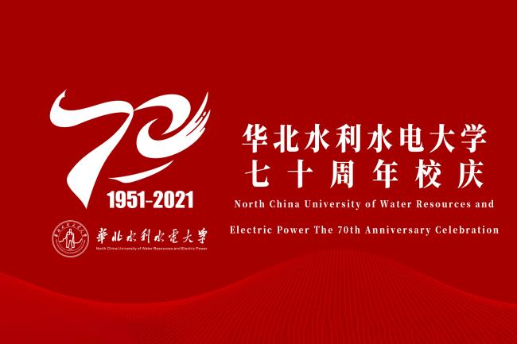

华北水利水电大学
North China University Of Water Resources And Electric Power
华北水利水电大学（North China University of Water Resources and Electric Power）， 简称"华水", 坐落于河南省郑州市，是水利部与河南省共建、以河南省管理为主的河南省特色骨干 大学，是金砖国家网络大学中方高校牵头单位、金砖国家大学联盟成员，为国家首批硕士学位、博 士学位授予权单位，入选教育部卓越工程师教育培养计划、中西部高校基础能力建设工程、硕士研 究生单独招考资格、少数民族高层次骨干人才计划，水利部水务培训中心、水利部电大开放教育办 公室设在学校。
学校起源自1951年创建于北京的中央人民政府水利部水利学校, 1954年更名为水利部北京水利学校.1958年北京水力发电学校、北京水力发电函授学院并入,成立 北京水利水电学院。1969年迁至河北省磁县岳城水库办学，1971年更名为河北水利水电学院，19 77年迁至河北省邯郸市办学，1978年更名为华北水利水电学院，1990年迁至河南省郑州市办学， 2000年整建制由水利部划转河南省管理，2013年更名为华北水利水电大学。
截至2021年6月,建有花园校区(占地面积555亩)、龙子湖校区 (占地面积1780亩)，江淮校区（占地面积1500亩），设有24个教学单位，有65个本科专业，4个 博士学位授权一级学科，38个硕士学位授权一级学科;有教职工2500余人，全日制在校生32182人 （含预科43人），其中本科生29602人，全日制硕士博士研究生2393人。
校庆动态
校庆通知

版权所有:华北水利水电大学201917202王曜玮
花园校区地址：河南省郑州市北环路36号 邮编：450045
龙子湖校区地址:河南省郑州市金水东路136号 邮编：450046